Claude
★★★★★优化提示词结构，最严谨。
注意事项：需要梯子，容易封号。Personal Workflow Notes · 2026
把日常使用心得、TOUTOU 真实生图案例和 Agent 工作流整理成一个可展示、可浏览、可复制提示词的内容分享网站。
以下所有分享均以个人日常使用心得为前提，仅供参考。
工具不是固定榜单，更适合作为不同工作场景下的选择参考。Tool Stack
先选对工具，再谈效率。通用对话负责思考和信息整理，生图工具负责把想法变成视觉资产，Agent 负责把复杂目标持续推进到产出。
适合写作、分析、提示词结构优化、资讯判断和方案推演。
优化提示词结构，最严谨。
注意事项：需要梯子，容易封号。资讯搜索，背靠推特，时效性最强。
注意事项：需要梯子。新模型 V4，能力很强，API 便宜。
注意事项：暂无。免费体验 MiMo Claw，目前的黑马模型。
注意事项：免费体验过程每次 1 小时，注意保存文件。豆包说明豆包作为目前国民级用户最多的通用对话模型，各方面能力都还可以，但都不太突出，而且由于其国民性，也是【AI 投毒】事件的重灾区，导致有时候查询一些重要信息会得到完全误导性的回答。日常使用没问题，生产力帮助不太大，且反馈的部分信息需要自己有一定的甄别能力，故这里不太推荐。
从“做灵感图”升级为“生产内容资产”：品牌视觉、电商图、种草图、直播素材、IP 形象、物料设计都可以先快速看到方向。
最新模型 Image2.0 无脑强推，试过就知道。
注意事项：需要梯子，需要会员。Nano Banana 模型，Gemini 会员免费用。
注意事项：需要梯子，Gemini 会员免费用。GPT-Image-2 Playbook
参考提示词网站的结构，把案例从“截图展示”改造成“场景、用途、变量、Prompt 拆解、复制复用”五件套。
品牌、电商、社媒、直播、IP、广告、物料分别展示，讲解时能快速切换到对应场景。
每个案例拆成角色背景、目标产物、风格要求、平台约束、输出规格，方便复用和迭代。
品牌、产品、主题、比例、平台、语气都可以替换，不把案例锁死在 TOUTOU 一次生成里。
生成后继续拆图、合成 PSD、转成电商详情页或社媒内容，才是真正的生产力闭环。
Prompt Gallery
以下保留原文关键提示词，并加入分类筛选、关键词搜索、Prompt 拆解和复制入口。图片已本地化保存，上传网站时更稳定。
11 个案例正在显示
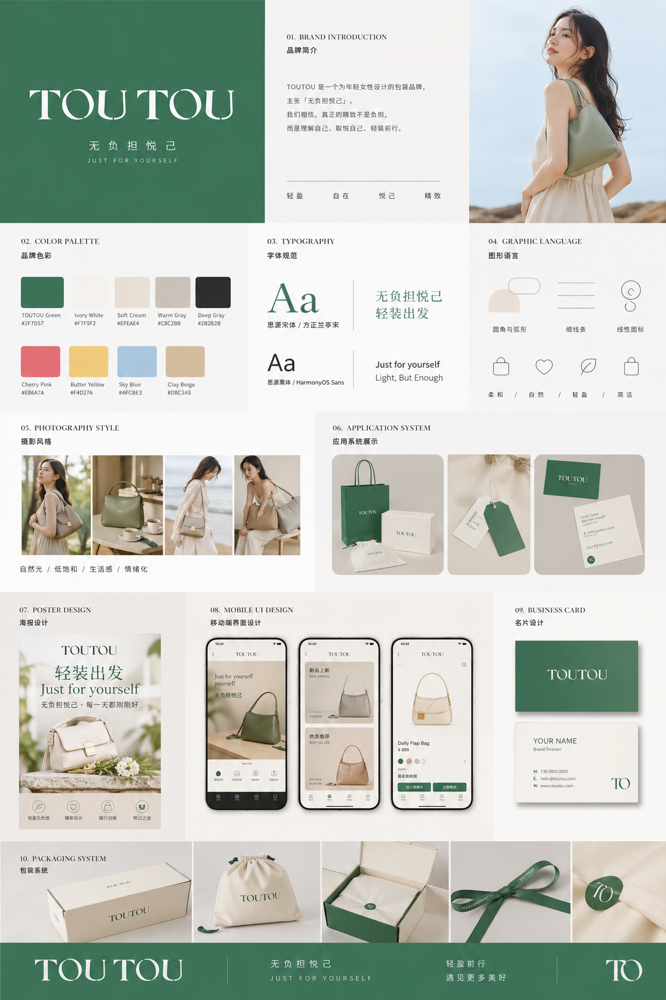
从 logo 延展到色彩、字体、版式、图形语言和多场景应用，适合品牌视觉方向快速起稿。
TOUTOU是一家主打18～25岁年轻女孩市场的女包品牌，主张【无负担悦己】。基于这个logo，生成一整套完整的品牌视觉系统。整体风格要求高级感、现代、简洁、突出品牌质感与统一性。请延展品牌主色、辅助色、字体风格、版式规范、图形语言、品牌海报、网页视觉移动端界面、名片、包装或社交媒体物料等应用场景，确保整体视觉统一、精致，并具有国际化审美。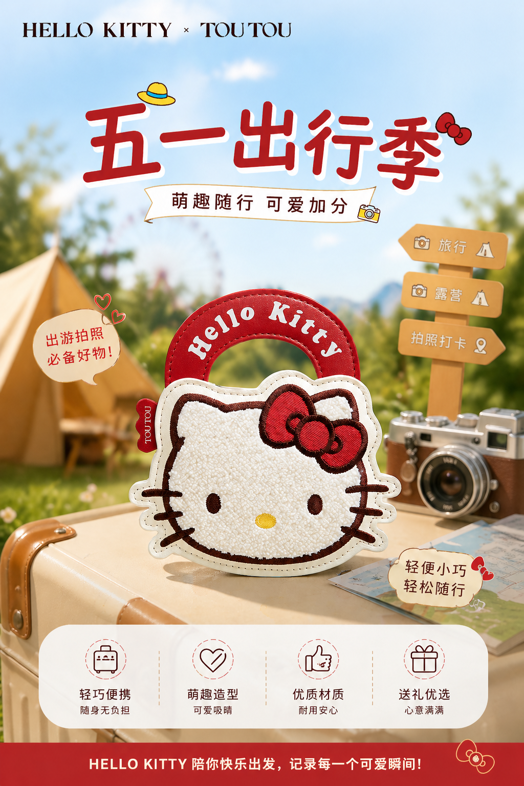
用简短需求直接测试模型审美和构图能力，适合快速探索节日营销方向。
给这个产品设计一张产品海报图，对应五一出行季，风格你自由发挥，比例2:3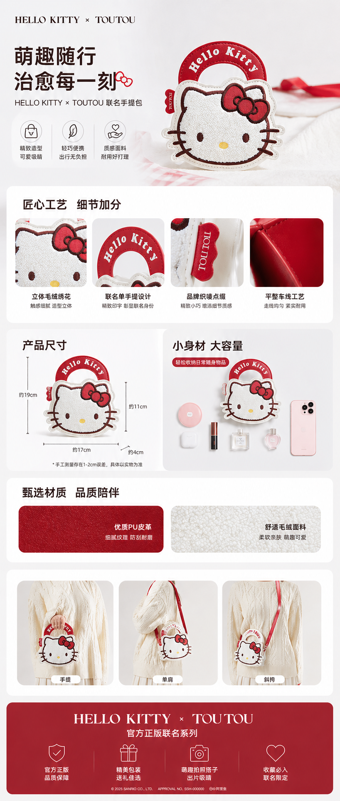
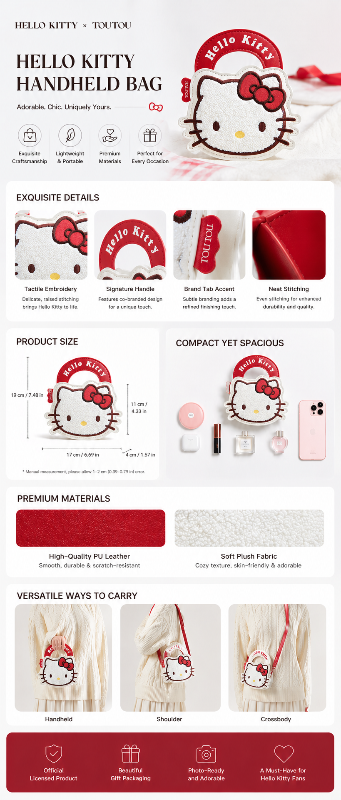
将单张产品图转成适配平台的中文详情长图，适合先拿到页面叙事和卖点排序。
图片是toutou的联名款包包，请根据图片生成一套天猫平台适用的详情图，中文长图模式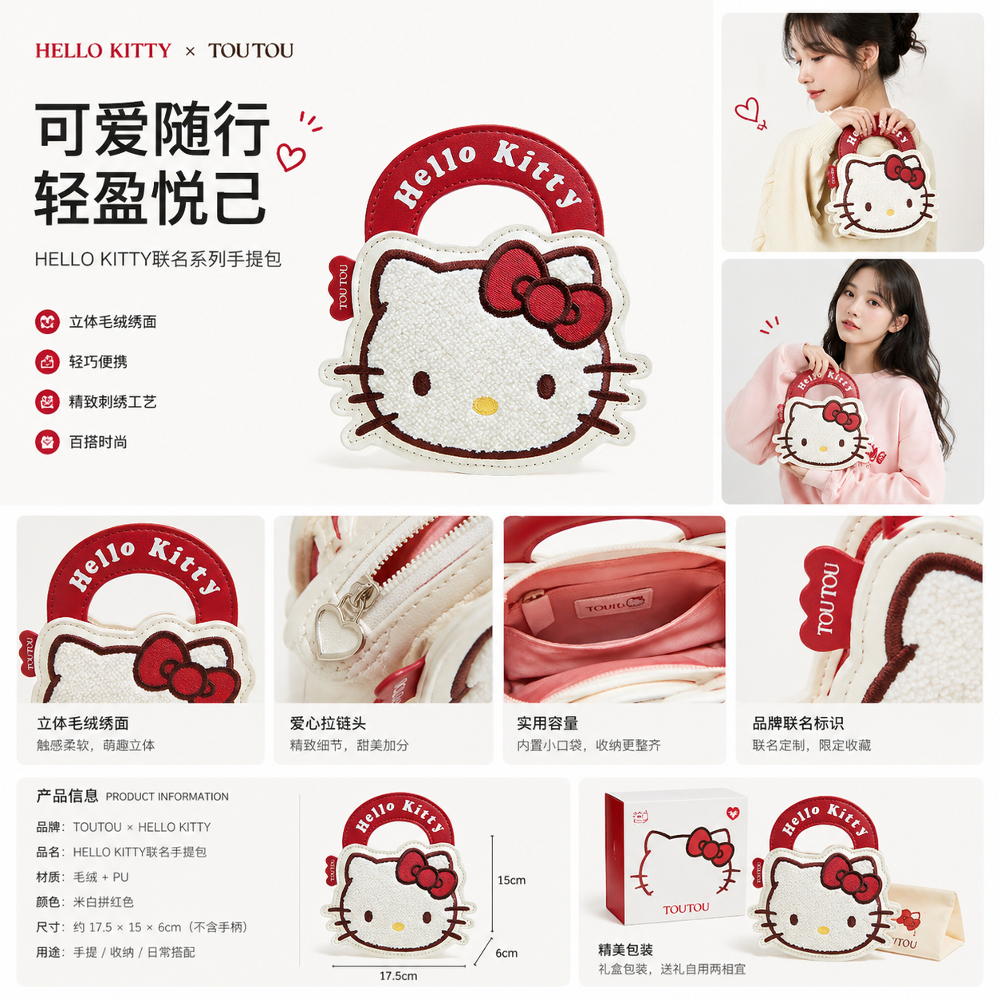
围绕销售用途生成一组产品展示图，适合主图、详情页模块和投放素材的初稿。
为这个包包生成一组电商产品展示图，用于销售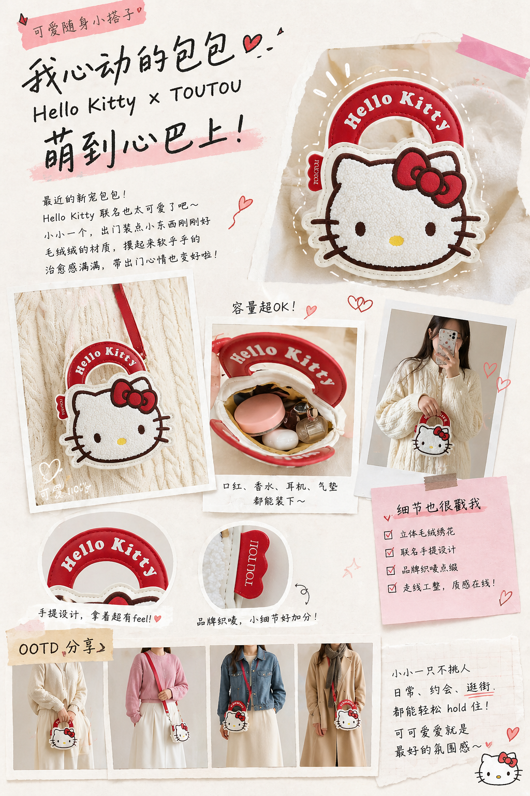
把产品图转成更像真实用户分享的种草图文，重点是降低官方感。
图片是toutou的联名款包包，帮我生成小红书流行的包包使用分享图文，不要太官方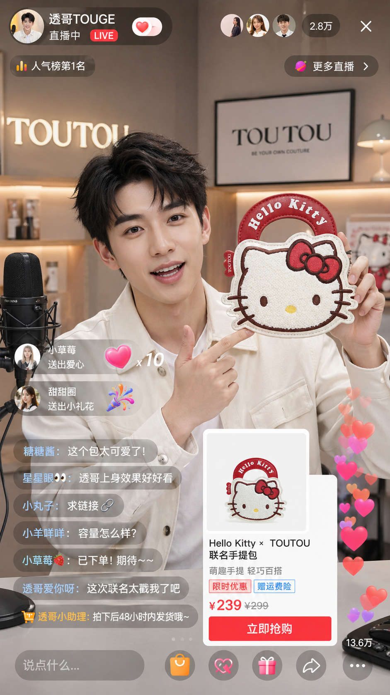
将人物肖像与直播 UI 叠加，生成可用于直播脚本演示或素材提案的场景图。
生成逼真的社交媒体直播界面，叠加在人物肖像之上（男主播【透哥】正在介绍toutou的这款包包），包含可自定义的聊天消息、礼物弹窗和商品购买卡片。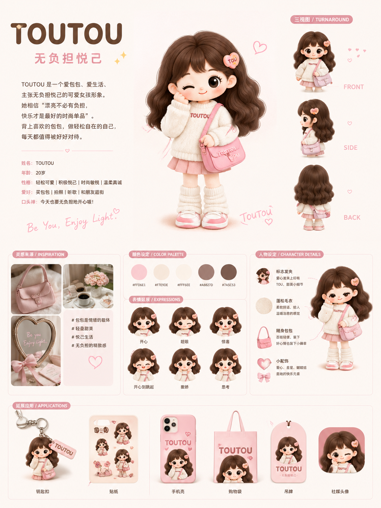
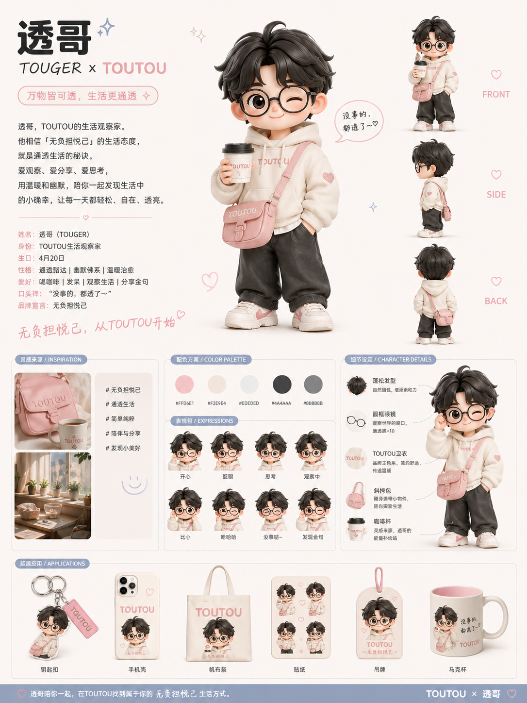
从品牌定位出发生成拟人化虚拟 IP，后续可继续补充【透哥】这类真实 IP 参考。
帮我给TOUTOU设计一个虚拟ip形象，TOUTOU是一家主打18～25岁年轻女孩市场的女包品牌，主张【无负担悦己】
（后续又补充了一张【透哥】的）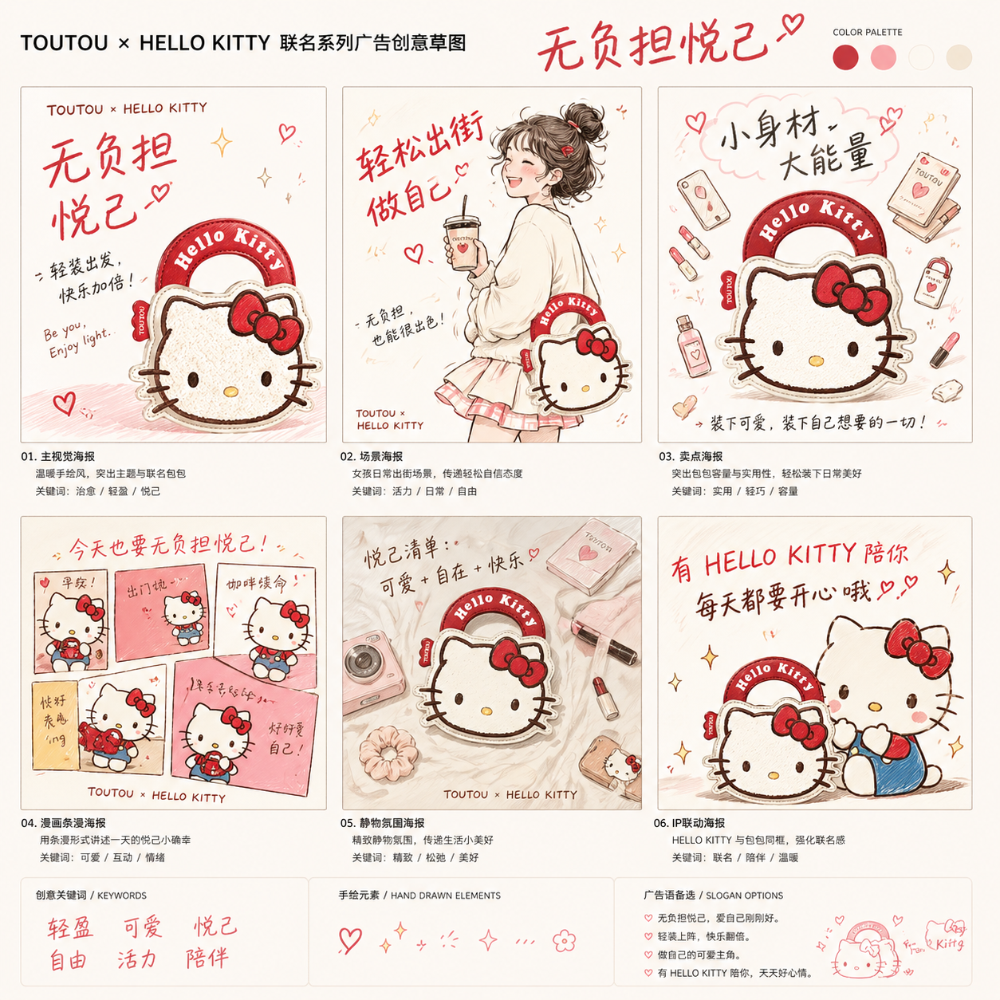
用“主题 + 联名对象 + 构图气质”快速生成广告方向，适合创意会前铺路。
帮我生成一组广告创意草图，toutou联名hello kitty女包品牌广告，无负担悦己主题，活力可爱构图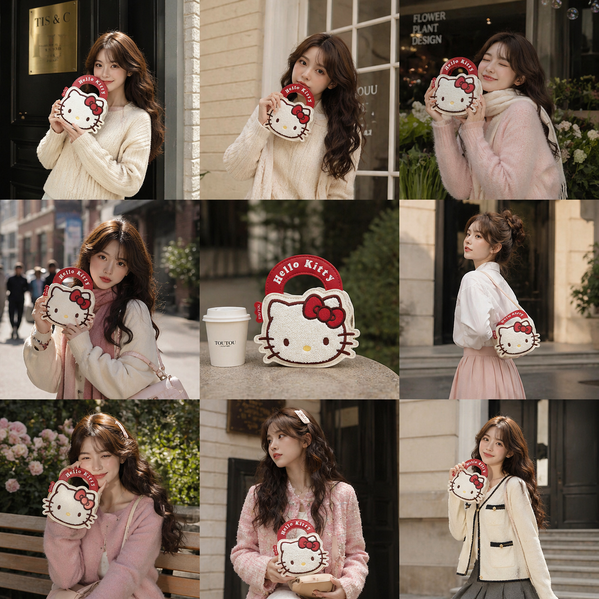
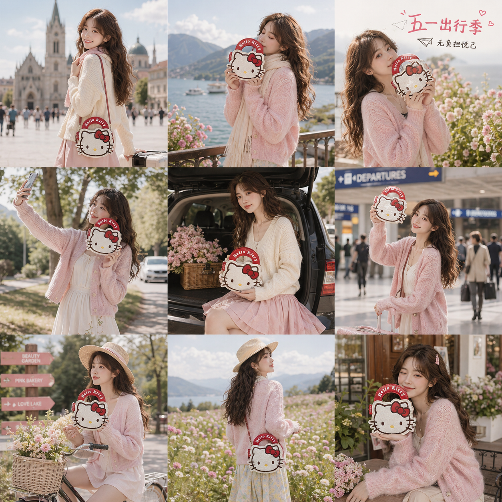
将产品带入假日街拍场景，获得一组更接近社媒传播和品牌大片之间的视觉素材。
生成一组9宫格的模特展示图片中品牌包包的街拍图，唯美，高级感（五一出行季主题）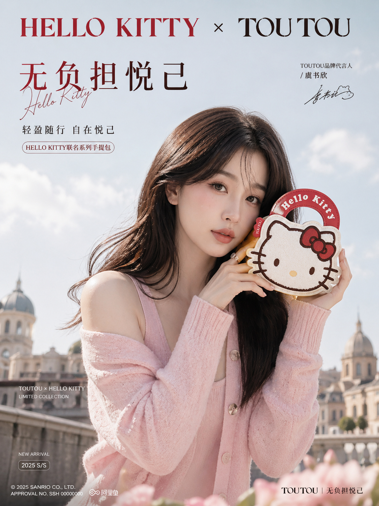
将产品包装成更高级的品牌广告海报，适合官宣、campaign key visual 和提案封面。
设计一张图片中包包的时尚大片广告图，高级感，国际范，品牌代言人官宣海报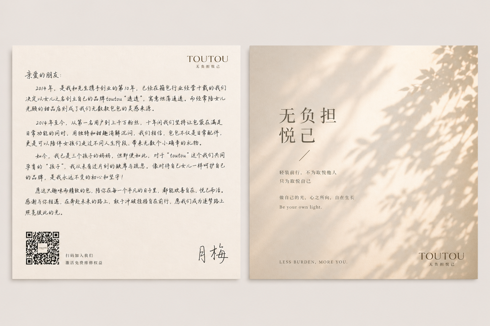
把品牌故事、维修权益、二维码和主题海报合并成一张可收藏的包裹卡设计。
给TOUTOU品牌设计一张包裹卡，正面是品牌创始人手写信+二维码（扫码加入我们，激活免费维修权益）+创始人签名（月梅）
背面是品牌相关【无负担悦己】主题海报，画面不需要包包
整体风格高级感、克制、温和、可信、美观，用户愿意收藏
正面手写信的内容如下：
亲爱的朋友：
2014 年，是我和先生携手创业的第10年，已经在箱包行业经营十载的我们决定以女儿之名创立自己的品牌toutou“透透”，寓意坦荡通透。而经常陪女儿光顾的甜品店则成了我们无数款包包的灵感来源。
2014年至今，从第一名用户到上千万粉丝，十年间我们坚持让包袋在满足日常功能的同时，用独特和甜趣消解沉闷，我们相信，包包不仅是日常配件，更是可以陪伴女孩们走过不同人生阶段、带来无数个小确幸的礼物。
如今，我已是三个孩子的妈妈，但即便如此，对于“toutou”这个我们共同孕育的“孩子”，我从未有过片刻的缺席与疏忽。像对待自己女儿一样呵护自己的品牌，是我永远不变的初心和坚守！
愿这只趣味而精致的包，陪你在每一个平凡的日子里，都能欢喜自在、悦己而活。感谢与你相遇，在奔赴未来的路上，敢于冲破桎梏自在前行，愿我们成为逐梦路上照亮彼此的光。Advanced Workflow
生图只是第一步。把画面拆成可编辑元素，再合成 PSD，设计同事就能继续调层级、改字、换素材。
随便生成一张符合要求的图片，先确定方向和整体氛围。
Thinking 模式中让 ChatGPT 把生成图片再分成一张张 PNG 图片。
将图片的元素拆分成一张张png图片，元素位置不变，画面尺寸不变，底色为白色点击左下角的【+】按钮，点击【更多】-选择【PS】，输入合成提示词。
将全部图片合成一个psd文件，去掉白底，每个元素为一个单独的图层下载生成的 PSD 文件即可，后续进入常规设计编辑流程。
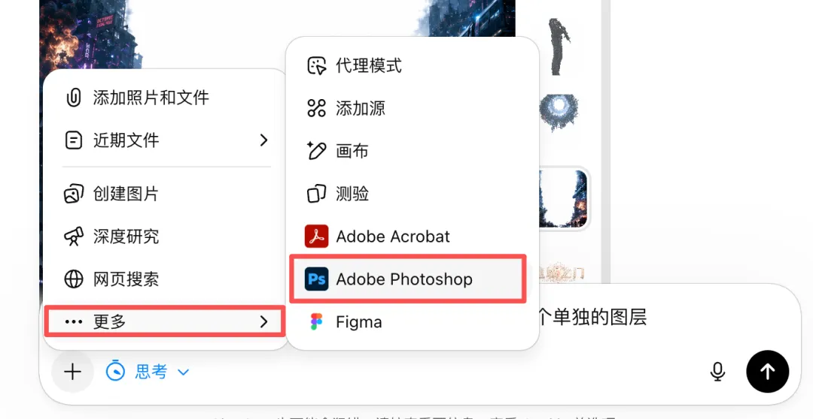
AI Agent
Agent 工具不只回答问题，更适合把一个目标拆成任务并持续推进。过去两周的核心收获，是让 AI 参与完整产出链路。
MTC 模式，专门给非程序员使用的生产力工具，上手门槛低（主力使用）。
注意事项：内测，需要邀请码。各方面能力都很强，但需要一定的学习成本（辅助使用，学习中）。
注意事项：需要梯子，ChatGPT Plus 会员可用。目前全球最强，使用和学习门槛高。
注意事项：门槛高、贵贵贵。过去两周，我用 MTC 模式辅助完成了以下工作，全部为真实产出。
| 产出类型 | 文档名称 | 规模 |
|---|---|---|
| 竞品深度调研 | 透透皮具私域竞品分析与会员体系设计方案 | 9家品牌、6章、约12000字 |
| 品牌战略研究 | Songmont 品牌战略深度研究报告 | 7章+附录、含用户旅程地图 |
| 完整项目PRD | TOUTOU 私域会员体系项目PRD | 10章+附录、约15000-20000字 |
| 会员体系方案 | 透透皮具私域会员体系搭建方案 V3.0 | 8大模块、含积分体系/小程序规划 |
| 企微运营SOP | 企微 SOP 详细文档 V2.1 | 8大SOP、含话术模板库 |
| 私域落地指南 | 基于 Songmont 对标的私域运营落地指南 | 包裹卡/小程序/企微全链路方案 |
| 能力对比分析 | 企微与小程序在会员体系中的角色分析 | 10章、15+维度对比 |
| SCRM可行性标注 | 企微SOP逐项SCRM可行性分析 | 逐项标注实现方式 |
| 汇报演示文稿 | 14页 HTML 演示文稿 | 含动画和演讲者模式 |
| 数据表格 | 企微用户标签体系 Excel | 完整标签体系分类 |
HTML Deck
更推荐 HTML 格式而非 PPT 格式，全部由前端渲染，视觉效果更好，响应速度更快，产出物体积更小更易分享。
invoke_command:/plan 帮我把这篇文档生成一篇适合分享演讲的ppt格式的html，设计风格：采用 Apple Human Interface 风格：纯黑背景 + 毛玻璃卡片 + 动态光晕 + 渐变强调色 + San Francisco 风格无衬线字体，整体呈现沉稳、专业、有科技感的演示效果Research
提效关键：给出明确的品牌清单、统一的调研维度、指定输出格式，AI 就能自动完成结构化调研。
调研以下9家品牌的私域运营模式：Coach、完美日记、瑞幸咖啡、泡泡玛特、名创优品、Charles & Keith、Songmont、DISSONA、Pedro。每个品牌从以下维度分析：会员体系设计、企微运营策略、小程序功能、私域引流方式、核心数据。最后输出对比矩阵和差异化分析。用Markdown格式，分章节，含表格。PRD & SOP
推荐输出 Markdown，适用性更强，且方便修改。复杂文档先用 Plan 模式规划框架，确认后再逐章填充。
Prompt Principles
Prompt 的价值不在“神奇句式”，而在于把背景、目标、约束和输出方式说清楚。
| 原则 | 说明 | 示例 |
|---|---|---|
| 明确角色 | 告诉 AI 你是谁、在做什么 | 我是品牌运营，正在搭建私域会员体系 |
| 给足背景 | 提供品牌信息、约束条件 | 均价200元、60%回购率、18-28岁女性用户 |
| 指定格式 | 明确输出格式和结构 | Markdown格式，含表格，分章节输出 |
| 分步执行 | 复杂任务先规划再执行 | 先用 Plan 模式出框架，确认后再填充内容 |
| 迭代优化 | 基于初稿持续调整 | V2.1版本，维修权益调整为银卡及以上会员专属 |